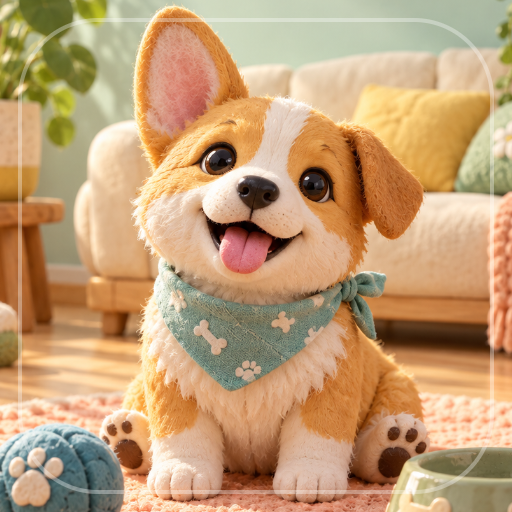

<- all projects

Miso & Me
Android, PC
Volume
Live
Care for a shy rescue puppy, teach gentle tricks and fill a scrapbook with little walks.
A new home is easier with a friend. Get to know Miso, a shy little rescue dog, and turn ordinary mornings into a growing scrapbook of small adventures. Brush, feed and play fetch with an animated puppy, and practice 20 trick cues together. Take 40 walks across five neighborhood chapters, one tile at a time to the picnic, keeping a photo from every walk. Build trust, upgrade Miso's cozy corner and open a story journal as you play. There are no timers and no punishment, and Miso never loses trust because you were away.